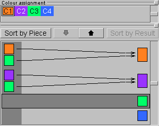
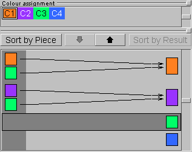
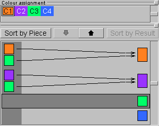

Figure:Colour assignment
Typically a puzzle problem in BURRTOOLS consists of a collection of pieces (shapes) and a goal, say another shape that the pieces should form when correctly assembled. This is what we call a simple problem definition. Note that it may well be not that 'simple' to solve it in real life. More elaborated or complex puzzle problems contain also colour constraints and/or grouped pieces.
As stated before, a puzzle can be a collection of problems, either simple, complex or a mixture of both. The Puzzle tab (Figure PuzzleTab) provides all the tools needed to build a variety of puzzle problems that are suited for the Solver.
As defined above, a simple puzzle problem consists only of a collection of pieces and a result shape that can be assembled (and preferably also disassembled) with these pieces (Figure SimplePuzzleProblem). Bear in mind that a simple problem also implies that all the pieces can be separated from one another. It takes only two steps (which are also required for complex problems) to create such a problem: initialising the problem and assigning shapes to the pieces and the result.
The first step is to initialise the problem(s). All the tools to do so are just below the Problems caption. Just as with shapes, this can be done by clicking the New button to start a completely new one, or by using Copy to edit a previously created problem definition without destroying the original. Accordingly, problems can be removed with the Delete button. All problems find their place in the problems list below these buttons and are identified with a 'Px' prefix to which a more meaningful description can be added by clicking the Label button. Also the methods for selecting and rearranging problems are similar to their counterparts on the Entities tab and need no further explanation here.
Until now we dealt with shapes as rather abstract concepts. Only by assigning these shapes to the pieces or the goal of a puzzle do they become meaningful. All available shapes are presented in the top list of the Piece Assignment panel, in which they can be selected and be given their purpose in the puzzle. Since a strict distinction is made between shapes and pieces, it's not necessary that all shapes be used in a single problem or in any problem at all.
Although not mandatory, it's probably best to assign the result shape first: select the appropriate shape and click Set Result. The result shape is then depicted in the top left part of the 3-D viewport (which also shows a smaller example of the currently selected shape) and the status line shows some information about the problem at hand.
Next, any other shape can be assigned to the pieces of the puzzle by selecting it and clicking +1. This adds a single copy of the shape to the second list which holds all the shapes used as pieces. If multipieces are involved, just add as many instances of the shape as required by the same means.
In the list of pieces any multipiece has an instance counter added (in parentheses) to its identifier. A single instance of every shape used in the puzzle is shown in the lower part of the 3-D viewer. To make corrections, pieces can be removed from the puzzle by selecting them (they also can be selected by clicking them in the pieces list) and clicking -1. Again, this removes only a single instance and needs to be repeated for removing multipieces.
Most of the time it is necessary to add one instance of all defined shapes to the puzzle. If there are a lot of them this can take while. This is what the all +1 button is for. It increases the piece counter for each shape (except the one assigned for the result) by one. Or it adds a first instance of the shape to the problem. The Clr button removes all pieces from the problem.
Since it doesn't make sense for any shape to be both the result and a piece at the same time, the shape set as result cannot be added to the list of pieces. Consequently, assigning a shape that's already in the list of pieces to the result will remove it from the list.
Whenever the total number of cubes in the pieces is within the boundaries set by the result shape (which can be inspected on the status line), this kind of simple puzzle problems can be taken to the solver. Note that the solver won't run if one or more pieces contain any variable voxels.
BURRTOOLS is capable of handling piece ranges instead of a fixed number of pieces. This feature is useful when you want to search for puzzles instead of solving a given one. If there is a range defined for one or more pieces then BURRTOOLS finds all ways to assemble the defined result using a number of pieces within the given range. As an example let's take Ronald Kint-Bruynseels Clarissa-Burr (see http://www.asahi-net.or.jp/~ rh5k-isn/Puzzle/ClarissaBurr). This puzzle consists of 2 different shapes. When Ronald defined this puzzle he had to try all possible combinations of the 2 pieces, beginning with 6 pieces of shape A and zero of shape B, over 5 times A and one B up to 6 times B. This can now be done way more easily with piece ranges. Simply tell BURRTOOLS that the result should be made out of 0-6 pieces of shape A and 0-6 pieces of shape B, or if you want to ensure that at least one of each shape is used, use ranges 1-6. Then solve.
Piece ranges can be easily defined using the min=0 button. This will set the minimum of the piece range for the current shape to zero. With that you can define the range by first adding max-min pieces (meaning the difference between the maximum and the minimum number of pieces), then set the minimum to zero and then add the missing min pieces. This should cover the most used usage cases.
For example: suppose you want to add a piece that you want to use 3, 4, 5 or 6 times in your puzzle. The piece range is 3-6. To enter those values you first add 6-3=3 pieces. Then you press the min=0 button getting a piece range 0-3. Now you add another 3 pieces and you get the range you want.
Except for the min=0 button, all other buttons always change the minimum and the maximum of the piece range.
If this calculation is too hard for you, you can use the problem detail dialogue (see section ProblemDeatils) to enter the ranges directly without the need for calculations.
Something we deliberately haven't mentioned in the description above is the fact that the solver will halt whenever it is unable to separate some pieces from each other. In other words, the solver will attempt to separate all the pieces from each other and reports that no solution exists when it fails to do so. This is just what is required for most puzzles as you need to have single pieces as a starting point.
But there are a few puzzles for which you have groups of pieces that are movable but not separable. Here the piece groups come in handy. Probably everyone familiar with PUZZLESOLVER3D ever experienced the futile attempts of that program trying to solve such designs by nearly endlessly shifting the entangled pieces back and forth. Not so with BURRTOOLS, as piece groups allow you to tell the disassembler that it is OK when it cannot separate a few pieces from one another.
When the disassembler finds two or more pieces that cannot be taken apart it checks whether all of the pieces involved are in the same group. If that's the case it rests assured and continues. If the pieces are not in the same group, the disassembler aborts its work and reports that the assembly cannot be disassembled. This is the basic idea, but there is a bit more to it.
A special case is 'Group-0'. All pieces in this group need to be separated from each other. This group is included so that it is not necessary to place all the pieces into their own group when you want the puzzle to completely disassemble. Pieces automatically go into Group-0, so you don't need to take care of that. As a matter of fact you won't even find any reference to that Group-0 in the GUI.
On the other hand, when dealing with puzzles of which it is known that certain pieces (say Sa and Sb) can't be separated from each other, grouping these pieces will cause the solver to report a valid disassembly in which the grouped pieces are treated as a single piece. But it is not a rigid piece since the parts can freely (within certain boundaries) move with respect to each other.
This technique can also be used for pieces that may be entangled, in case one is searching for possible designs. If these pieces are indeed inseparable the solver will report so, but if they can be separated the solver may report the complete disassembly as well:
Now for the hard part: pieces can be in more than one group. If you have e.g. a puzzle for which you know that piece Sa either interlocks with piece Sb or piece Sc and cannot be separated from it, but you don't know which of those (Sb or Sc) piece Sa is attached to, you can assign Group-1 to Sa+Sb and Group-2 to Sa+Sc:
This way the disassembler detects that both pieces are in Group-1 when Sa and Sb are inseparable and it finds that both pieces are in Group-2 when Sa and Sc cannot let go from each other. In both cases the solver will report a valid disassembly. However, if Sb and Sc are entangled the solver is not able to find a valid disassembly.
All instances of a multipiece need to have the same group assignment, but you can specify how many of these may be in a group maximally. That means you can make statements like 'not more than 3 pieces of Sn may be in Group-1':
Now how does it all come together? The disassembler starts to do its work. For each subproblem (a subproblem is a few pieces that it somehow has to get apart) it first checks if there is a unique group assignment for all pieces involved - i.e. all pieces have exactly one group assigned and that group is the same for all of them - it doesn't even attempt to disassemble that subproblem.
If this is not the case it tries to disassemble. In case of a failure it adds the pieces that are in this subproblem to a table of lists of pieces. Once done with the disassembler, the program comes back to this table and tries to assign a group to each of the lists of pieces. It just checks all possibilities by comparing the entries of the table with the group assignments made by the user. Whenever the sum of pieces (of a certain shape Sx) in such a 'problematic' table entry is bigger than the value the user designated to that particular piece, no valid group assignment can be made. If the program can find a valid assignment the puzzle is disassembled; if it cannot, the puzzle is assumed to be not disassemblable.
Assume we have a puzzle that contains (among others) 5 pieces of shape Sa. Three of them might go into Group-1 and another 2 into Group-2. There is also a piece Sb that might go into Group-1:
After the disassembler has run we have the following lists of pieces in the table:
We have no idea how useful this might be in practice as most of the currently available puzzles require a complete disassembly. But who knows, maybe this feature will help in the design of lots of puzzles new and crazy ideas.
All settings that cannot be set directly on the main problem tab can be set within the Problem Details window (Figure GroupEditor) which opens by clicking the Detail button. This window allows you to define groups and to define piece ranges without having to subtract values. The window also contains rarely-used parameters.
Let's first see how piece groups are defined using this window. Although the above section may sound complicated, implementing piece groups is actually very simple. All actions take place in the Problem Details Editor. Initially the Group Editor shows a tabulated overview of the pieces used in the problem. The first column (Shape) lists the pieces by their prefix and name, the second and third (min and max) show the instances range of each.
Creating piece groups is straightforward as the Add Group button simply adds a new group to the problem. Each new group gets its own column (Gr 1, Gr 2, etc...) in which one can specify the maximum number of instances of a certain piece that can go in that particular group. Just click on a cell and it will become an input box. Cells that contain a value > 0 will receive the default colour of the corresponding shape, cells with zero are grey and no number is shown. Any group that has no values at all in its column will be deleted on closing the Group Editor. Hence, deleting all the values of a previously made group will remove the group even if its column stays present in the Group Editor.
Now to the piece ranges. It is possible to enter the values directly into the min and max columns of the table. You just have to keep in mind, that min has to be less than or equal to max. This is enforced by the program, so that max will change, if you enter a value in min that is larger than the current maximum. The same holds true for the minimum, when changing the value in the max column. You also need to keep in mind that the table contains entries only for shapes that are already used in the current problem. You cannot (yet) add another shape to the problem using this dialogue, but you can remove a shape by setting the minimum and the maximum to zero.
Finally, this window also contains an entry field called Maximum Number of Holes (empty variable cubes). This value is used by the program, when piece ranges are used, in which case it is not possible for the program to determine many holes there will be in the final solution. Because this missing information results in a huge slowdown as many more possibilities have to be tried, it is possible to use this field to specify the maximum number of holes allowed. If the number of holes should not be limited, the field should be left empty.
BURRTOOLS automatically adds the most probable rules for colour constraint when you add a new colour or when a new problem is created, namely that each colour can be mapped into itself, i.e. a piece voxel with colour Cx can go into a result voxel of colour Cx. If you don't want that or if you need additional placement possibilities, you can change the colour constraint rules in the colour assignment section.
The Colour Assignment panel (Figure ColourAssignment) has two lists. The first one shows all the available custom colours and allows selecting a certain colour for which then some relations can be set. These relations simply indicate which colour(s) in the result can accommodate which colour(s) in the pieces. By allowing certain combinations (which is in fact prohibiting all other combinations), constraints are imposed on the possible placements of the pieces. These relationships are shown and constructed in the second list. This list has three columns, of which the first shows the 'piece colours', the last shows the 'result colours', and the one in between clearly depicts the relationships by a series of arrows pointing from the piece colours to the result colours. The list is sorted either by the piece colours or by the result colours. The buttons Sort by Piece and Sort by Result switch between these two views.
When sorted by piece (the left part of Figure ColourAssignment), the bottom list is showing you that every voxel of the pieces with colour Cx can go into every voxel of the result that has one of the colours at the end points of the arrows starting from Cx. When sorted by result (on the right in Figure ColourAssignment), the list shows which piece colours will be allowed to go in a particular colour of the result.
To set these relationships, first click the piece colour (or result colour, depending on the sorting method) for which you want to set the constraints. This will activate the 'relations line' for that particular colour which is indicated with a dark surrounding box (note that clicking anywhere on this relations line has the same effect). Next, the down and up pointing arrows will respectively add or remove the colour selected in the top list to or from the constraint settings.
Currently puzzle problems can be rearranged only with the left and right arrow buttons of the Problems section, but more advanced management procedures may be added in the future.
Some tricks and tips will be added to the next update of the user guide.